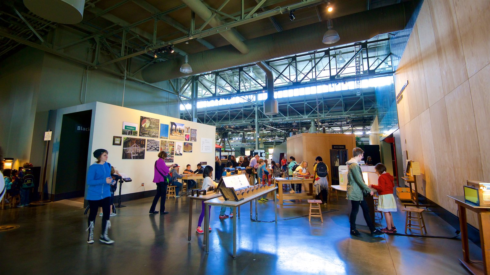
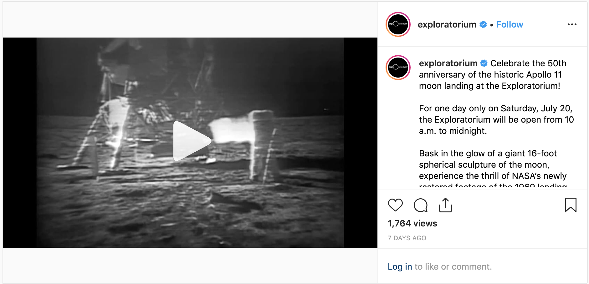
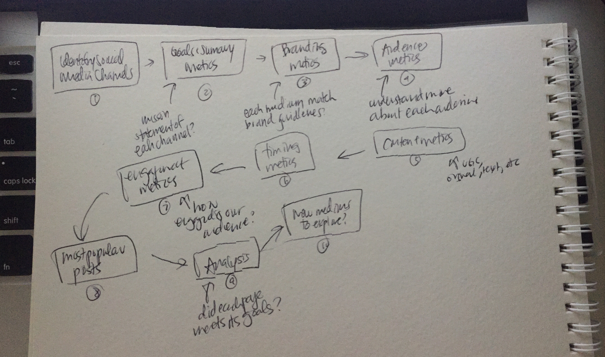

About
The Exploratorium is an interesting place! It's not quite a museum, and is more like an "learning laboratory" where all is open to learn about science, art, and perception intertwined. Learning here is key—just as I was upstairs in the offices learning my way through my work / assignments / team, visitors down below were learning hands-on through interactive exhibits—which made working here all the more exciting overall.

Image—Exploratorium
Content Creation
Another aspect of Digital Marketing I was able to take on related to Social Media content creation. After researching Social Media best practices to utilize, as well as each social media channel's individual style + most engaged content type, I captured the Exploratorium voice to create written and ditigal content to promote upcoming events.

Analytics + Audits
In order to review and revise the current social media methods used, an audit needed to be done for our current main channels. Thus, we could review what was working, what was failing, and what could be improved upon across the social media channels in order to increase engagement.
All data for the month-wide audits I conducted were gathered through social media analytics sites (Later, Twitter Analytics, FB Analytics, Pinterest Analytics, etc) where metrics such as engagement, audience, branding, and content (UGC, video, etc.) were noted onto Excel and used for overall analysis. With all accounts taken, I was able to determine and present what was working, needed to be pushed further, and could be modified for an increase in channel impressions + engagements.

Takeaways
And if they ever see this—I want to thank Sewon, Klay, Emma, and all the other wonderful & fun interns and staff I met along the way!